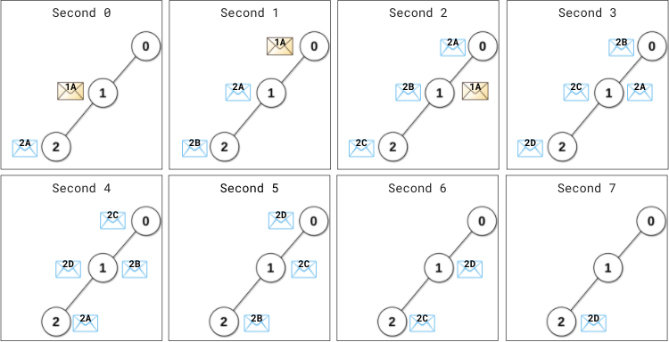
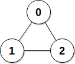

| Category | Difficulty | Likes | Dislikes |
|---|---|---|---|
| Algorithms | Medium | 737 | 75 |
deutsche-bank
There is a network of n servers, labeled from 0 to n - 1. You are given a 2D integer array edges, where edges[i] = [ui, vi] indicates there is a message channel between servers ui and vi, and they can pass any number of messages to each other directly in one second. You are also given a 0-indexed integer array patience of length n.
All servers are connected, i.e., a message can be passed from one server to any other server(s) directly or indirectly through the message channels.
The server labeled 0 is the master server. The rest are data servers. Each data server needs to send its message to the master server for processing and wait for a reply. Messages move between servers optimally, so every message takes the least amount of time to arrive at the master server. The master server will process all newly arrived messages instantly and send a reply to the originating server via the reversed path the message had gone through.
At the beginning of second 0, each data server sends its message to be processed. Starting from second 1, at the beginning of every second, each data server will check if it has received a reply to the message it sent (including any newly arrived replies) from the master server:
i will resend the message every patience[i] second(s), i.e., the data server i will resend the message if patience[i] second(s) have elapsed since the last time the message was sent from this server.The network becomes idle when there are no messages passing between servers or arriving at servers.
Return the earliest second starting from which the network becomes idle.
Example 1:

Input: edges = [[0,1],[1,2]], patience = [0,2,1]
Output: 8
Explanation:
At (the beginning of) second 0,
- Data server 1 sends its message (denoted 1A) to the master server.
- Data server 2 sends its message (denoted 2A) to the master server.
At second 1,
- Message 1A arrives at the master server. Master server processes message 1A instantly and sends a reply 1A back.
- Server 1 has not received any reply. 1 second (1 < patience[1] = 2) elapsed since this server has sent the message, therefore it does not resend the message.
- Server 2 has not received any reply. 1 second (1 == patience[2] = 1) elapsed since this server has sent the message, therefore it resends the message (denoted 2B).
At second 2,
- The reply 1A arrives at server 1. No more resending will occur from server 1.
- Message 2A arrives at the master server. Master server processes message 2A instantly and sends a reply 2A back.
- Server 2 resends the message (denoted 2C).
...
At second 4,
- The reply 2A arrives at server 2. No more resending will occur from server 2.
...
At second 7, reply 2D arrives at server 2.
Starting from the beginning of the second 8, there are no messages passing between servers or arriving at servers.
This is the time when the network becomes idle.Example 2:

Input: edges = [[0,1],[0,2],[1,2]], patience = [0,10,10]
Output: 3
Explanation: Data servers 1 and 2 receive a reply back at the beginning of second 2.
From the beginning of the second 3, the network becomes idle.
Constraints:
n == patience.length2 <= n <= 105patience[0] == 01 <= patience[i] <= 105 for 1 <= i < n1 <= edges.length <= min(105, n * (n - 1) / 2)edges[i].length == 20 <= ui, vi < nui != vi